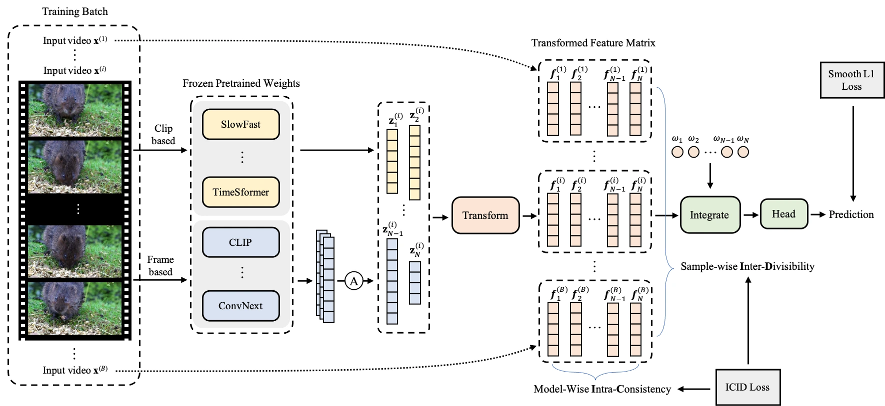
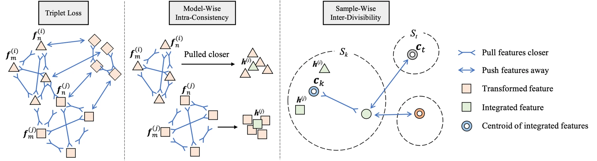

Video quality depends on content, distortion, and motion. Human opinion scores are costly to collect, limiting the size of dedicated training datasets. PTM-VQA investigates whether models trained for other tasks can supply complementary knowledge.
视频质量受到内容、失真和运动等多方面影响。人工主观评分的采集成本较高，限制了专用训练数据的规模。PTM-VQA 研究其他任务的预训练模型能否提供互补知识。
The challenge is not merely to collect more features. Representations trained for different purposes must become comparable in a space that reflects perceived video quality.
难点不只是收集更多特征，而是让面向不同任务训练的表示，在反映视频感知质量的空间中具有可比性。
Bringing pretrained representations together汇聚预训练表示
Features are extracted from multiple pretrained models with frozen weights. An intra-consistency constraint aligns their representations in a shared quality-aware space. An inter-divisibility constraint separates groups formed from the quality annotations. The method also selects candidate models according to clustering performance on quality-assessment data.
从多个权重冻结的预训练模型中提取特征。内部一致性约束将其对齐到统一的质量感知空间，跨组可分性约束则根据质量标注区分样本组。方法还依据质量数据上的聚类表现选择候选模型。
Different pretrained models emphasize different evidence: object content, motion, texture or semantic structure. Their raw features do not automatically agree on a common meaning of quality. The consistency objective brings representations of the same video into a shared space, while separation by quality groups makes that space useful for prediction. Model selection then favors complementary feature sources rather than assuming that adding every available backbone is always beneficial.
不同预训练模型关注物体、运动、纹理或语义等不同证据，原始特征并不会自动形成共同的质量概念。一致性目标将同一视频的不同表征对齐到共享空间，按质量分组的分离约束使这个空间适合预测。模型选择进一步寻找互补特征，而不是假定加入所有骨干一定更好。
{kind=link}

Testing complementary sources of knowledge检验不同知识来源的互补性
The experiments compare pretrained feature combinations on KoNViD-1k, LIVE-VQC and YouTube-UGC, then assess larger-scale training on LSVQ. Cross-database evaluation tests transfer without fine-tuning on the target set. PLCC and SRCC measure agreement with human quality judgments, while ablations examine consistency, separation losses and clustering choices. Runtime changes with the selected backbones, so efficiency is evaluated for the actual combination used.
实验在 KoNViD-1k、LIVE-VQC、YouTube-UGC 上比较预训练特征组合，再在 LSVQ 上验证更大规模训练。跨数据集评测不在目标集上微调；PLCC、SRCC 衡量与人类质量判断的相关性，消融分析一致性、分离损失和聚类选择。由于耗时随骨干组合改变，效率必须对应实际采用的模型组合。
What transfers to quality assessment哪些知识能够迁移到质量评估
On LSVQ-Test, the PTM-VQA-VQC configuration reaches PLCC 0.8637 and SRCC 0.8545. Cross-database tests also examine transfer without fine-tuning. The results support reusing frozen pretrained representations for quality prediction, while different backbone combinations have different speed and accuracy. This is a quality assessment method, not a video restoration algorithm.
在 LSVQ-Test 上，PTM-VQA-VQC 配置取得 PLCC 0.8637、SRCC 0.8545，并通过无需微调的跨数据集实验评估迁移能力。结果支持复用冻结预训练表征来预测质量，不同骨干组合的速度与精度存在差别。这是一种视频质量评估方法，而非视频恢复算法。
{kind=link}

Predicting quality is a distinct task质量预测是一项独立任务
The framework is a way to reuse knowledge acquired for other visual tasks when dedicated quality labels are scarce. Its output is a prediction of perceived quality, not a guarantee about factual content or temporal correctness. In a restoration system it can support comparison and selection, but a high predicted score should still be paired with fidelity and task-specific checks.
这一框架在专门质量标注不足时复用其他视觉任务积累的知识。输出是感知质量预测，并不保证内容真实或时间关系正确。在恢复系统中，它可以帮助比较和选择结果，但较高预测分仍需结合保真度与任务相关检查。
Paper & authors论文与作者
PTM-VQA: Efficient Video Quality Assessment Leveraging Diverse PreTrained Models from the Wild ↗
Cite this work
@misc{yuan2024ptmvqaefficientvideoquality,
title = {PTM-VQA: Efficient Video Quality Assessment Leveraging Diverse PreTrained Models from
the Wild},
author = {Kun Yuan
and Hongbo Liu
and Mading Li
and Muyi Sun
and Ming Sun
and Jiachao Gong
and Jinhua Hao
and Chao Zhou
and Yansong Tang},
year = {2024},
eprint = {2405.17765},
archivePrefix = {arXiv},
primaryClass = {cs.CV},
url = {https://arxiv.org/abs/2405.17765}
}